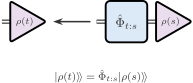
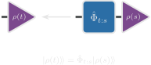
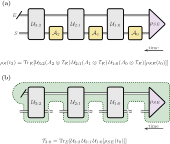
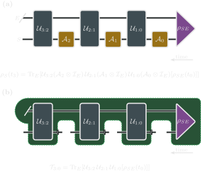
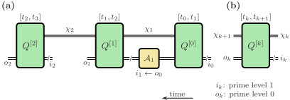
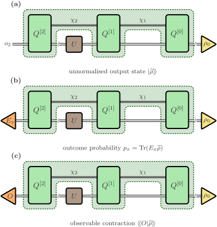
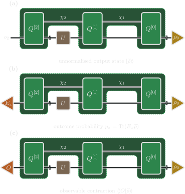

Process Tensors
A process tensor describes how a quantum system responds to operations applied at several times while it interacts with an environment. It retains the multi-time information needed to compare different preparations, controls, and measurements within one underlying process.
The goal of this page is to explain what a process tensor is, how it naturally describes non-Markovian open quantum dynamics, and how the same object appears in ProcessTensors.jl as a tensor network with time steps, input/output legs, memory links, and instruments. This page uses the vectorisation conventions introduced in Quantum States and Liouville Space and the network vocabulary from Tensor Networks in Physics.
From channels to multi-time processes
A quantum state is represented by a density matrix $\rho$. A quantum channel is a physical transformation that maps input states to output states:
\[\rho' = \Phi(\rho).\]
For deterministic dynamics, $\Phi$ is completely positive and trace preserving (CPTP). Unitary propagation and propagation generated by a time-independent GKLS master equation are familiar examples.


In this sense, an ordinary channel answers a one-time question: Given the state now, what is the state later?
We can extend this and ask a more operational question: Given the operations performed on the system at several earlier times, what state, or outcome do we obtain later?
A process tensor $\mathcal T_{n:0}$ makes the intervention history an explicit input. For times $t_0<\cdots<t_n$, write
\[\widetilde\rho_n =\mathcal T_{n:0} [\mathcal A_{n-1},\ldots,\mathcal A_0],\]
where $\mathcal A_k$ is the system operation applied at $t_k$, before evolution to $t_{k+1}$. The process is linear in each operation separately. It therefore describes probabilistic mixtures of interventions as well as individual choices.
For deterministic channels at every slot and a normalised initial joint state, the final state has unit trace. If an operation selects a measurement outcome, the output is generally an unnormalised conditional state. For an outcome sequence $\mathbf x=(x_0,\ldots,x_{n-1})$,
\[\widetilde\rho_n(\mathbf x) =\mathcal T_{n:0} [\mathcal A_{n-1}^{(x_{n-1})},\ldots,\mathcal A_0^{(x_0)}], \qquad p(\mathbf x)=\operatorname{Tr}\widetilde\rho_n(\mathbf x).\]
If a final measurement has effect $E_y$, its joint probability with the earlier outcomes is $\operatorname{Tr}[E_y\widetilde\rho_n(\mathbf x)]$. When $p(\mathbf x)>0$, dividing by it gives the final state conditioned on the earlier outcomes. Keeping the output unnormalised during contraction preserves linearity and retains the probability information.
From system–environment dynamics to a reusable process
Let $\rho_{SE}(t_0)$ be the initial joint state. Between interventions, the joint system evolves through maps $\mathcal U_{k+1:k}$. For unitary microscopic dynamics,
\[\mathcal U_{k+1:k}(X)=U_{k+1:k}XU_{k+1:k}^\dagger.\]
An intervention acts on the accessible system, while the environment is untouched directly. The final reduced state is
\[\widetilde\rho_n =\operatorname{Tr}_E\!\left[ \mathcal U_{n:n-1}\circ(\mathcal A_{n-1}\otimes\mathrm{id}_E) \circ\cdots\circ \mathcal U_{1:0}\circ(\mathcal A_0\otimes\mathrm{id}_E) \bigl(\rho_{SE}(t_0)\bigr) \right].\]
Composition acts from right to left, and the diagrams on this page run in that same direction: later times are on the left. The process tensor packages the fixed initial joint state, intermediate propagators, and environmental trace into an object with open slots for the operations. The same construction also applies when the joint propagators are CPTP maps rather than unitary maps.


The propagators, the initial joint state, and the environmental trace stay in the process. The open slots are where an experiment attaches its operations. Those slots are not identity operations already inserted.
Initial conditions and the package workflow
The general definition above allows a correlated initial state $\rho_{SE}(t_0)$. The construction workflow described here instead supplies an environmental state during construction and a system preparation during evaluation. It corresponds to an initially factorised preparation $\rho_0\otimes\rho_E$; arbitrary initial system–environment correlations are not supplied merely by changing $\rho_0$.
The resulting network exposes the system input of the first interval. Attaching a preparation there specifies the experiment's initial system state. This is a boundary convention different from fixing a joint initial state and treating $\mathcal A_0$ as an operation on that state; the underlying multi-time idea is the same.
What stays fixed when the process is reused?
The environment, its initial state, the system–environment couplings, and the chosen time grid determine the constructed process. Operations at the exposed slots can subsequently change without repeating that construction.
The package separates free-system propagation from environmental propagation internally during construction, then embeds the free-system maps into the temporal cores. That separation does not remove system dynamics from the completed ProcessTensor. An extra control operation inserted at a slot acts in addition to the propagation already encoded there. Changing a Hamiltonian or coupling embedded in the cores generally requires rebuilding the process.
pt = build_process_tensor(
system;
environment=environment,
dt=dt,
nsteps=nsteps,
method=Dense(),
)See Construct a process tensor for the system, bath, and coupling definitions. Once constructed, the same pt can be evaluated with different preparations and intervention sequences.
Anatomy of the temporal tensor network
The package represents the process as a matrix-product network along time. For $n$ intervals, a core $Q^{[k]}$ represents the interval from $t_k$ to $t_{k+1}$, with $k=0,\ldots,n-1$. It carries a system input $i_k$, a system output $o_k$, and the neighbouring temporal bonds:
\[Q^{[k]}_{\chi_k\chi_{k+1}}{}^{o_k}{}_{i_k}.\]
The system legs are Liouville indices. For a system with Hilbert dimension $d_S$, each has dimension $d_S^2$. The environmental initial state and final trace are absorbed into the boundary cores, leaving trivial external bond dimensions.
A preparation occupies $i_0$. For $k\geq1$, an intervention connects the output of the preceding interval to the input of the next:
\[\mathcal A_k:\ o_{k-1}\longrightarrow i_k.\]
A final effect closes $o_{n-1}$, the system output at $t_n$. Thus the label of a core identifies an interval, whereas the intervention lies at its boundary. Core $Q^{[0]}$ is the first core even though Julia's positional indexing starts at one.


Core $Q^{[k]}$ owns the interval $[t_k,t_{k+1}]$. The intervention $\mathcal A_k$ joins $o_{k-1}$ to $i_k$. The input leg has prime level 1 and the output leg has prime level 0. Those primes label the Liouville ports. They are not the ket and bra indices already fused inside each leg. Julia stores $Q^{[k]}$ at position $k+1$. Use input_sites and output_sites when attaching custom tensors.
input_sites(pt)
output_sites(pt)
linkdims(pt)These expose the temporal system legs and bond dimensions. See Construct a process tensor for an inspection of the constructed network and its time labels.
Dense and ACE construction
The temporal bonds arise from environmental degrees of freedom connecting successive intervals. In the uncompressed dense construction, an environment of Hilbert dimension $d_E$ carries an internal Liouville space of dimension $d_E^2$.
| Method | Construction idea | Role of temporal bonds |
|---|---|---|
Dense() | Build the small joint environmental influence directly | Retain the full environmental Liouville space on internal links |
ACE() | Incorporate independent bath modes and compress their combined influence | Retain a smaller effective space according to the chosen compression settings |
The ACE setting assumes independent environmental modes with a product initial bath state; their interaction through the accessible system still produces a combined influence on it. Compression allows larger environments to be represented when the resulting temporal structure is sufficiently compressible.
Dense construction avoids ACE truncation, but does not eliminate other numerical approximations. Finite bath truncations, propagator approximations, and the splitting of free-system and environmental dynamics must still be assessed. In particular, the system and environmental generators need not commute. The construction tutorial explains the propagation and compression settings; the SVD principles are introduced in Tensor Networks in Physics.
Interventions and process evaluation
A physical instrument is an outcome-labelled family of completely positive, trace-nonincreasing maps whose sum is trace preserving. A channel is the deterministic single-outcome case.
The package's instrument interface also provides more general contraction objects: observable insertions, one-sided operator actions, and markers that leave legs open. These support response calculations, but they are not all physical measurement operations. The interpretation of the result depends on what was attached.
| Attachment | Network role | Interpretation |
|---|---|---|
| State preparation | Supplies an input leg | Initial or replacement state |
| Channel or selected outcome map | Joins an earlier output to the next input | Control or conditional state transformation |
| Identity effect | Closes an output leg | Trace over that output |
| Positive measurement effect | Closes an output leg | Outcome probability for a physical state |
| Observable insertion | Closes an output or enters a response contraction | Expectation or correlation, according to the schedule |
| Left/right operator action | Joins adjacent interval legs | Linear insertion such as $\rho\mapsto A\rho B$ |
| Open-leg marker | Leaves an index unresolved | State-like output or a more general tensor |
An identity channel passes the system between intervals; it is not a trace-out operation. Likewise, leaving an output open retains its information, while tracing it closes that leg.
seq = InstrumentSeq(default=identity_operation(), nsteps=pt.nsteps)
add!(seq, state_preparation(ρ0), 0)This starts a schedule with a preparation and identity connections. Complete its terminal closure or open-output choice as shown in Process tensor instruments.
What does a contraction return?
A physical sequence with one final system output left open returns a state-like object. Its trace is one for a deterministic experiment, or the outcome-sequence probability for a selected branch. Closing that output with the identity gives the trace; closing it with an effect gives the corresponding outcome probability.
A fully contracted network is a scalar, but it is not automatically a probability. Observable and operator-insertion contractions can yield expectations or complex correlation values. Multiple unresolved legs instead return a higher-order object whose meaning depends on the remaining inputs and outputs.


The cores and the earlier operations stay fixed. An open final leg returns an unnormalised output state. Closing that leg with an effect returns an outcome probability, and closing it with a Hermitian observable returns the corresponding contraction. A conditional expectation divides that contraction by the probability of the selected outcomes.
result = evaluate_process(pt, seq) # A completed intervention schedule
trajectory = evolve(pt, ρ0) # Reduced-trajectory convenience workflowBoth interrogate the same process. See Process tensor instruments for complete schedules and the returned data.
Obtaining a trajectory does not turn the cores into independent reduced-state propagators. The contraction retains the temporal bonds carrying environmental influence.
Correlations and extended experiments
A sequential measurement correlation is computed from joint outcome probabilities and includes measurement backaction. An operator correlation such as $\langle A(t_2)B(t_1)\rangle$ uses the appropriate operator insertions, which need not be completely positive maps. The two are generally different experiments or response quantities.
Testers extend the intervention setting by allowing an ancillary system to persist between operations. They probe the process through a larger controlled experiment. The same distinction remains: the process describes the fixed underlying evolution, while the attached network specifies how it is interrogated.
Memory and physical consistency
Operational memory
Earlier interventions can affect later statistics even in a Markovian process, simply by changing the present state. Memory concerns dependence that cannot be accounted for by that state alone.
A useful diagnostic is a causal break: discard the system and prepare the same state $\sigma$ after different earlier histories. The replacement channel acts as
\[\mathcal R_\sigma(X)=\operatorname{Tr}(X)\sigma, \qquad (\mathcal R_\sigma\otimes\mathrm{id}_E)(\rho_{SE}) =\sigma\otimes\rho_E.\]
The replacement removes system–environment correlations at the break, but the environmental marginal can still depend on the earlier history. If identical subsequent controls produce different future statistics, the environment has retained information that the freshly prepared system state does not contain. When histories are outcome-conditioned, compare their normalised conditional future statistics. The instrument gallery will show this comparison as a diagram.
For a Markovian process on the chosen time grid, the response to arbitrary interventions is described by fixed step-to-step channels and an initial state. A particular reduced trajectory, or a particular pair of histories with matching futures, is not enough to establish this property for all interventions.
Temporal bond dimensions describe the storage and contraction cost of the chosen representation. A compact bond can retain nontrivial memory, while an unnecessarily large bond can contain redundant directions. They are not, by themselves, representation-independent memory measures.
Physical structure and numerical approximations
A physical process obeys four connected requirements:
- Multilinearity: mixing an operation at one slot mixes the corresponding outputs while all other slots remain fixed.
- Complete positivity: physical interventions produce positive unnormalised output states, including when the experiment is extended by ancillary systems.
- Normalisation: deterministic sequences preserve total probability; summing over all outcomes of complete instruments gives a normalised experiment.
- Causality: later choices cannot change earlier marginal outcome statistics when later outcomes are summed over. Postselecting a later outcome can change conditional statistics without violating this requirement.
These properties follow from the microscopic physical construction. Generic numerical compression does not automatically preserve every constraint exactly. Assess convergence of the quantities used in the experiment as the time step, bath truncation, and compression settings are refined. Arbitrary custom insertion tensors also require their own physical interpretation; a valid process does not turn a nonphysical insertion into a physical operation.
Related material and further reading
For deeper background:
- F. A. Pollock et al., Non-Markovian quantum processes: Complete framework and efficient characterization: the process-tensor framework and its operational interpretation.
- F. A. Pollock et al., Operational Markov Condition for Quantum Processes: memory and causal-break interventions.
- S. Milz and K. Modi, Quantum stochastic processes and quantum non-Markovian phenomena: a broad introduction to multi-time quantum processes.
- M. Cygorek et al., Numerically exact open quantum systems simulations for arbitrary environments using automated compression of environments: the ACE construction and compression of environmental influence.